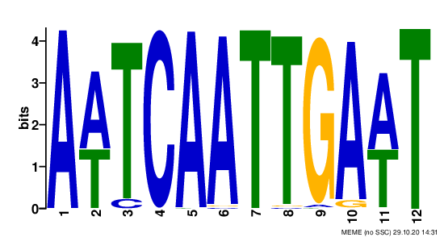
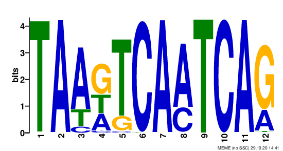
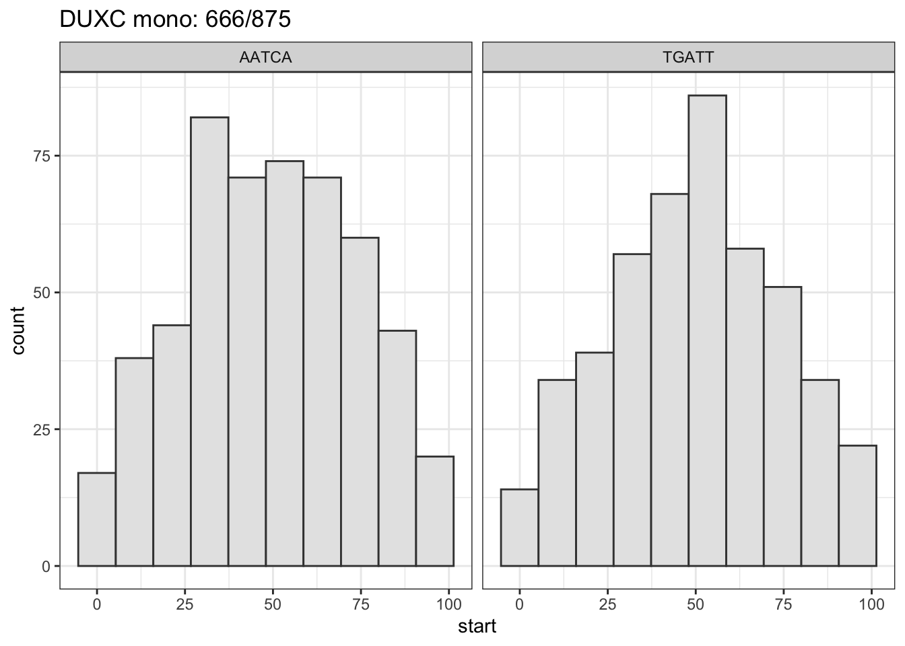
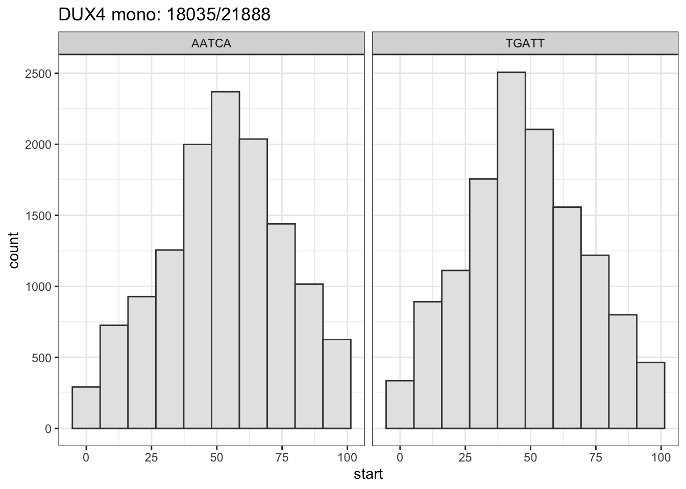

Chapter 10 DUXC peaks and LINE1s
To answer whether DUXC and DUX4 directly regulate to L1s, we want to check if DUXC an DUX4’s motifs are enriched in the peaks that overlap with L1s. To do so, we did the following steps:
1. use the narrowed peaks (+/- 50 bps from summit) and select the subset that overlap with the differentially expressed L1s (LFC > 1; adjusted p-value < 0.05; compared with control lucifereas samples)
2. get sequence of the selected peaks
3. use MEME to find the DUXC/DUX4 motif of these peaks
4. use BioStrings::matchPattern() to find the motif enrichment
Results: DUXC’s L1-overlapped peaks has a palindromic motif - AATCAATTGATT (243/691); DUX4’s has motif TAA(G/T/C)TCAATCA (431/999). DUXC and DUX4 motifs are not enriched in peaks overlapping with up-regulated L1s. However, 41% and 47% of DUXC and DUX4 L1-overlaped peaks contain the conanical mofit AATCA; for those containing AATCA, ~ 70% have AATCA located within 25 bps from the summit.
Load packages and datasets
suppressPackageStartupMessages(library(plyranges))
suppressPackageStartupMessages(library(ShortRead))
suppressPackageStartupMessages(library(Biostrings))
suppressPackageStartupMessages(library(ggplot2))
suppressPackageStartupMessages(library(BSgenome.Cfamiliaris.UCSC.canFam3))
# load datasets
#pkg_dir <- "~/tapscott/RNA-Seq/canFam3.DuxFamily"
pkg_dir <- "~/CompBio/canFam3.DuxFamily"
fig_dir <- file.path(pkg_dir, "figures")
data_dir <- file.path(pkg_dir, "data")
meme_dir <- file.path(pkg_dir, "meme_narrow_peaks_ol_L1s")
load(file.path(data_dir, "peaks_list.rda"))
load(file.path(data_dir, "CinC_rmsk.rda"))
load(file.path(data_dir, "HinC_rmsk.rda"))10.1 Narrow Peaks and expressed L1s
- Narrow the peaks to 101 bps (+/-50 bps from the summits) of CCH and hDUX4.
# re-define peaks (+/- 50 summit) = 101 bps
.narrow_peaks_100bps <- function(gr_peaks) {
gr <- granges(gr_peaks)
mcols(gr) <- mcols(gr_peaks)[, c("abs_summit", "fold_enrichment", "X.log10.qvalue.",
"name", "annotation", "geneId")]
start(gr) <- gr$abs_summit - 50
end(gr) <- gr$abs_summit + 50
gr
}
# narrowing peaks to +/- 50 bps from the summit
peaks_DUXC_mono <- .narrow_peaks_100bps(peaks_list$Sample7_ImmCnMb_CCH_mono) # 6060
peaks_hDUX4_mono <- .narrow_peaks_100bps(peaks_list$Sample6_ImmCnMb_hDUX4_mono) #85825- Load the read counts,
DESeqDataseqinstance of canFam3 RMSK:
# load read counts for the canFam3 Repeat Masker annotation
suppressPackageStartupMessages(library(canFam3.rmsk))
L1_rmsk <- canFam3.rmsk %>% plyranges::filter(repFamily == "L1")
L1_rmsk$dummy_repNamename <- paste0(L1_rmsk$repName, "_", 1:length(L1_rmsk))- Find peaks overlapping with up-regulated L1s
- DUXC: 691 out of 6031 narrowed peaks are overlapping with up-regulated L1s (11.46%)
- DUX4: 17908 out of 85825 narrowed peaks are overlapping with up-regulated L1s (20.87%)
# select narrowed peaks (intersect) overlapping with L1s
.get_overlap_exp_L1 <- function(peaks_gr, L1_rmsk, de_LINE1) {
#
ol <- join_overlap_inner(peaks_gr, L1_rmsk, minoverlap=50L)
message(sprintf("%s out of %s narrowed peaks are overlapping with L1s (%2.2f%%).",
length(unique(ol$name)), length(peaks_gr),
length(unique(ol$name))/length(peaks_gr) * 100))
# overlap with up-regulated L1?
ol_de_LINE1 <- ol %>% plyranges::filter(repName %in% as.character(de_LINE1$repName))
message(sprintf("%s out of %s narrowed peaks are overlapping with up-regulated L1s (%2.2f%%).",
length(unique(ol_de_LINE1$name)), length(peaks_gr),
length(unique(ol_de_LINE1$name))/length(peaks_gr) * 100))
return(list(ol=ol, ol_de_LINE1=ol_de_LINE1))
}
# DUXC
de_LINE1 <- CinC_rmsk$res_df %>% dplyr::filter(padj < 0.05, repFamily == "L1") #16
message("DUXC monoclonal sample:")## DUXC monoclonal sample:## 875 out of 6031 narrowed peaks are overlapping with L1s (14.51%).## 691 out of 6031 narrowed peaks are overlapping with up-regulated L1s (11.46%).# DUX4
de_LINE1 <- HinC_rmsk$res_df %>% dplyr::filter(padj < 0.05, repFamily == "L1")
message("DUX4 monocloal sample:")## DUX4 monocloal sample:## 21888 out of 85825 narrowed peaks are overlapping with L1s (25.50%).## 17908 out of 85825 narrowed peaks are overlapping with up-regulated L1s (20.87%).10.1.1 Motif discovery using L1-overlapped peaks
The code below makes FASTA files for the narrowed peaks that overlap with up-regulated L1s and run MEME to exam the enrichment of DUXC/DUX4 motifs. DUXC’s L1-overlapped peaks has a palindromic motif - AATCAATTGATT (243/691); DUX4’s L1-overlaped peaks has motif TAA(G/T/C)TCAATCA (431/999). Both motifs contain the canonical 2nd part of DUX4/DUXC motif - AATCA. Does that mean both DUXC and DUX4 were attracted to bind to this half motif and create artifacts of peaks?
# must move to rhino so that I can use MEME (4.11.1-foo-2015b) module
.peaks_seq_to_MEME <- function(peaks, BS, write_FASTA=TURE, meme_dir, prefix, max.peaks=999L) {
#require(BSgeome)
# max.peaks must be integer
if (length(peaks) > max.peaks) {
if (!is.integer(max.peaks)) max.peaks <- as.integer(max.peaks)
#idx <- sample(1:length(peaks), size=max.peaks)
#peaks <- peaks %>% plyranges::arrange(plyranges::desc(X.log10.qvalue.))
or <- order(peaks$X.log10.qvalue., decreasing=TRUE)
peaks <- peaks[or[1:max.peaks]]
}
peaks_seq <- BSgenome::getSeq(BS, peaks)
names(peaks_seq) <- 1:length(peaks_seq)
tmp_file <- file.path(meme_dir, paste0(prefix, "_narrow_peakseq.fa"))
ShortRead::writeFasta(peaks_seq, file=tmp_file)
cmt <- sprintf("meme %s -oc %s -nmotifs 3 -maxw 12 -V -mod zoops -maxsize 110000 -p 4 -V",
tmp_file, file.path(meme_dir, prefix))
system(cmt)
# search the meme result and return the enriched motif
return(peaks_seq)
}
# system("ml MEME/5.1.1-foss-2019b-Perl-5.30.0-Python-3.7.4")
#' make fasta files for the narrowed peaks that overlaps with LINE1 elements and run MEME
library(BSgenome.Cfamiliaris.UCSC.canFam3)
meme_dir <- file.path(pkg_dir, "meme_narrow_peaks_ol_L1s")
DUXC_mono_peakseq <- .peaks_seq_to_MEME(DUXC_mono$ol_de_LINE1,
BS=BSgenome.Cfamiliaris.UCSC.canFam3,
meme_dir = meme_dir, prefix="DUXC_mono", max.peaks=999L)
DUX4_mono_peakseq <- .peaks_seq_to_MEME(DUX4_mono$ol_de_LINE1,
BS=BSgenome.Cfamiliaris.UCSC.canFam3,
meme_dir = meme_dir, prefix="DUX4_mono", max.peaks=999L)Top DUXC L1-overlapped peaks motif is AATCA AT TGATT (243/691); Top DUX4 L1-overlapped peaks is TAA G/T/C T C AATCA (431/999). Both shared the conanical DUX4/DUXC/mDux motif, AATCA, but none of them matched the whole DUXC nor DUX4 motifs.
DUXC L1-overlapped peaks motif:  
10.1.2 Match DUX4 and DUXC motif to L1-overapped peaks
Here I break DUX4 and DUXC motifs into two seperate motifs. The first part of the motif is the diverged one and second the canonical: AATCA. Then I use BioStrings::matchPattern() to check if the L1-overlapped peaks contains those specific short form and continues forms of motif. About 42% and 47% of these peaks contains the canonical motif - AATCA.
# use BioStrings:matchPattern to find the motif
hDUX4_motif <- "TAACCTAATCA"
mDux_motif <- "TGATTCAATCA"
DUXC_motif <- "TAATCCAATCA"
motif2 <- "AATCA" # second part of cononical motif (DUX4, Dux and DUXC) / same as motif5
# DUXC mono
.match_motif_pattern <- function(peaks_gr, prefix) {
peaks_seq <- BSgenome::getSeq(x=BSgenome.Cfamiliaris.UCSC.canFam3, names=peaks_gr)
count_motif <- vcountPattern(pattern=motif2, subject=peaks_seq)
message(sprintf("%s: %2.2f %% have motif %s (canonical 2nd motif)", prefix,
100*(sum(count_motif > 0) / length(peaks_seq)), motif2))
#count_motif <- vcountPattern(pattern=DUXC_motif, subject=peaks_seq, max.mismatch=1)
#message(sprintf("%s: %2.2f %% have motif %s (DUXC, 1 mismatch)",
# prefix, 100*(sum(count_motif > 0) / length(peaks_seq)), DUXC_motif))
#count_motif <- vcountPattern(pattern=hDUX4_motif, subject=peaks_seq, max.mismatch=1)
#message(sprintf("%s: %2.2f %% have motif %s (hDUX4, 1 mismatch)",
# prefix, 100*(sum(count_motif > 0) / length(peaks_seq)), hDUX4_motif))
#count_motif <- vcountPattern(pattern=mDux_motif, subject=peaks_seq, max.mismatch=1)
#message(sprintf("%s: %2.2f %% have motif %s (mDux, 1 mismatch)", prefix,
# 100*(sum(count_motif > 0) / length(peaks_seq)), mDux_motif))
return(invisible())
}
.match_motif_pattern(DUXC_mono$ol_de_LINE1, prefix="DUXC mono")## DUXC mono: 41.18 % have motif AATCA (canonical 2nd motif)## DUX4 mono: 47.00 % have motif AATCA (canonical 2nd motif)10.1.3 Location of AATCA on L1-overlapped peaks
About 70% of AATCA are located within 25 bps from the summit.
# for each peaks that match to AATCA, what's the relative location of AATCA to the summit?
.motif_location <- function(peaks, tf_name="DUXC mono") {
# this function finds the location of AATCA (TGATT) w.r.t peaks
motif <- "AATCA"
rev_motif <- "TGATT"
peaks_seq <- BSgenome::getSeq(x=BSgenome.Cfamiliaris.UCSC.canFam3, names=peaks)
m_index <- vmatchPattern(motif, peaks_seq)
rev_m_index <- vmatchPattern(rev_motif, peaks_seq)
hist_data <- data.frame(motif = c(rep(motif, length(unlist(m_index))),
rep(rev_motif, length(unlist(rev_m_index)))),
start = c(start(unlist(m_index)), start(unlist(rev_m_index))))
tmp <- vcountPattern(motif, peaks_seq)
tmp2 <- vcountPattern(rev_motif, peaks_seq)
title <- paste0(tf_name, ": ", sum(tmp2 + tmp > 0), "/", length(peaks_seq) )
# message: % between 25 - 75
msg <- sprintf("%2.0f%% between [25, 75] (summit is at 50)",
100* sum(hist_data$start > 24 & hist_data$start < 76)/nrow(hist_data))
message(msg)
ggplot(hist_data, aes(x=start)) +
geom_histogram(bins=10, color="gray25", fill="gray90") +
#geom_density(fill="gray90") +
facet_wrap( ~ motif) +
labs(title=title) +
theme_bw()
}tidy_duxc_mono_ol <- DUXC_mono$ol %>% plyranges::filter(!duplicated(name)) # use unique peaks
gg <- .motif_location(tidy_duxc_mono_ol, tf_name = "DUXC mono")## 67% between [25, 75] (summit is at 50)
tidy_dux4_mono_ol <- DUX4_mono$ol %>% plyranges::filter(!duplicated(name)) # use unique peaks
gg <- .motif_location(tidy_dux4_mono_ol, tf_name="DUX4 mono")## 69% between [25, 75] (summit is at 50)
10.2 LINE1s and AATCA
The question now is do L1s are enriched with AATCA/TGATT sequence? How many L1s contains AATCA or TGATT.
Results: 60% of L1s contains AATCA or TGATT sequence.
# which L1s have AATCA?
# within these L1s, how many AATCA a L1 has and what's the average?
# does the LINE1 element that has AATCA overlap with DUXC/DUX4 peaks?
# prun the L1s to standard chromosome
tidy_L1_rmsk <- keepStandardChromosomes(L1_rmsk, pruning.mode="tidy", species="Canis_familiaris")
motif <- "AATCA"
rev_motif <- "TGATT"
L1_seq <- BSgenome::getSeq(x=BSgenome.Cfamiliaris.UCSC.canFam3, names=tidy_L1_rmsk)
m_index <- vmatchPattern(motif, L1_seq)
rev_m_index <- vmatchPattern(rev_motif, L1_seq)
cnt_motif <- vcountPattern(motif, L1_seq)
cnt_rev_motif <- vcountPattern(rev_motif, L1_seq)
freq <- sum(cnt_motif + cnt_rev_motif > 0)
msg <- sprintf("%2.1f%% (%5.0f/%5.0f) L1s contain either AATCA or TGATT.",
freq/length(cnt_motif) * 100, freq, length(tidy_L1_rmsk))
msg## [1] "60.0% (535563/892594) L1s contain either AATCA or TGATT."